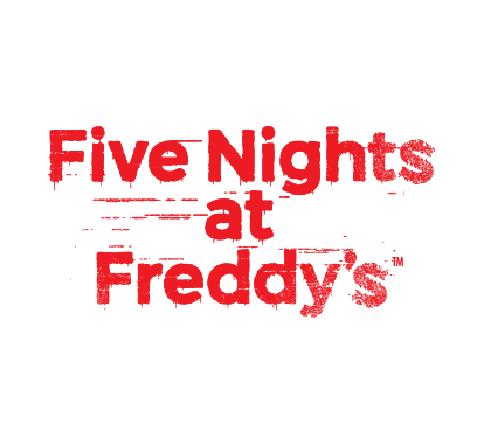

You control Mike Schmidt, a security guard hired to work the night shift at Freddy Fazbear's Pizza from midnight to 6 AM. The animatronics, which are allowed to walk around at night to prevent their servos from locking up, attack anyone in the restaurant after closing time, presumably because humans resemble naked endoskeletons. The animatronics are Freddy Fazbear, who only appears on later nights on the right, but can sneak into the office; Bonnie, who only appears on the left and can teleport; Chica, who appears on the right and will linger there; and Foxy, who requires occasional camera checks lest he run out of Pirate's Cove directly into the office. who The player can monitor their activity through security cameras, as well as two doors on either side of the office, and lights to check outside the door. Use of the cameras, doors, and lights will drain power. If the power runs out before your shift ends, all lights turn off, all closed doors open, and Freddy's face flickers with light as a tune plays in the background. If the night doesn't end at that time, Freddy will kill the player. Once the first five nights are beaten, a sixth night will be unlocked, and after that a seventh night with customizable AI for the four main animatronics. A fifth animatronic, Golden Freddy, can appear and will crash the game. Until Night 4, the player will receive phone messages from "Phone Guy", who gives the player tips and advice, and tell the player some information about the history of the restaurant, until he is killed on his Night 4 by an animatronic. On Night 5, only a garbled, distorted voice and static (presumably recorded by an animatronic) is played.
Taking place in what MatPat theorized was the previous restaurant location, the player controls Jeremy Fitzgerald as he survives another five nights from 12 to 6. The four original animatronics are old and heavily damaged. New animatronics include "Toy" versions of Freddy, Bonnie, and Chica (who is slimmer and holds a cupcake in her hand); Mangle, a mess of animatronics parts that crawls across the ceiling; and Balloon Boy, who does not attack but blocks flashlight access, hindering progress. Doors have been removed altogether; additionally, there are two vents instead of doorways (with lights) on each side of the office, and a large doorway in the front, shined by a flashlight. The flashlight is the only thing with drainable power. Foxy's need for camera checks (who can be warded off by quick light flicks of the flashlight) is replaced by the Puppet, who requires a music box to be wound up. The only defense the player has is an empty Freddy Fazbear head that can be used to fool animatronics (except Foxy and the Puppet). There is also another sixth and customizable AI night. Golden Freddy can occasionally appear as well, and has customizable AI. One of four low-resolution minigames to appear, allowing insight into the series' lore.
You are playing as Michael. The Survival Logbook confirms this, as he draws Nightmare Fredbear in a page asking to draw dreams he recently had. Given the context of the Logbook, we can assume he had these dreams somewhere around the time of FNAF 3, which lines up with how Balloon Boy is featured, how all the animatronics mirror their behavior from FNAF 1 and how a FNAF 1 phone call plays in the background of the nights. Mike's experiences with the animatronics have stuck with him and are taking part in his nightmares. Thus the "What have you brought home?" in the teaser. We can be fairly sure the nightmares themselves are caused by Nightmare, as we know he is Shadow Freddy and he is positioned/named in a way that implies he's somehow more important or influencing than the other characters. Shadow Bonnie similarly inflicts a nightmare in one of the books. This would also line up with Shadow Freddy appearing in FNAF 3 as an easter egg. The crying child's death does seem to be a big part of these nightmares. We're playing in his room, as seen in SL, our character is portrayed as a kid and there's easter eggs showing hospital stuff on the bed. Most likely, this could be implying Michael's guilt over what he did to the crying child is also a part of these dreams. He's putting himself in his brother's place, in a way. Nightmare Fredbear in particular can be argued to represent this concept overall, considering his stronger presence, the flatline noise he makes when he's in the bed, his obvious connection to Fredbear, his lines in UCN being references to lines Fredbear said to CC, except from his perspective (EX: "We are still your friends", "We know who our friends are, and you are not one of them") and Nightmare Fredbear's black and white buttons potentially being a reference to the crying child's design. The alternative is that Michael straight up is the crying child, a theory that was initially unpopular, became a big debate in the community, kinda died and has had a bit of a resurgence. It usually implies that, after CC's death, he was somehow revived by The Puppet, Golden Freddy or William using remnant and ended up being the player character in the future games. I do not believe this. Now, as for the SL stuff: we do see the Nightmares on the map (though it doesn't fully line up with FNAF 4, like there being 5 Plushtraps) and Nightmare Fredbear as well as Nightmare Freddy do imply they were created by William and used to be illusions of some sort. Considering the cameras in the private room, it is very likely William used illusions on real animatronics to create the Nightmares at some point. All we can do here is speculate though, since nothing concrete is confirmed. I personally believe Michael was the victim of this, since otherwise it would be weird for Mike to just have dreams about random illusions William made (reminder that illusion discs are not be predetermined and rely on your brain's expectations to work) and the 1983 code implies CC had already died. What we can be sure on is that the illusions William seemingly made were not the nightmares we played through. In FNAF 4, Nightmare Foxy is able to disappear into thin air. Nightmare Fredbear is able to teleport and become a giant head. Freddy is able to manifest from thin air. The Freddles just fly out from under the bed. Shining lights or closing doors makes the nightmares disappear. They are obviously not real, they physically can't be and their behavior doesn't make sense that way. Illusions are not capable of doing this stuff, especially when we know they're connected to actual robots in some way. Lastly, when it comes to the houses: the house in FNAF 4's minigames and the house in the gameplay are most likely separate houses. The title screen makes it look like the FNAF 4 house is near trees. In Midnight Motorist, we see a house that most likely belongs to the Afton family and seems to be in a similar landscape. The layout of either of these doesn't match up with the house in FNAF 4's minigames. So there are most likely at least 2 houses. As for the Plushtrap room, it's unclear. It seems too small to be its own building, and Help Wanted's map features the Plushtrap room as a direct extension of the FNAF 4 gameplay house. To put it simply, it doesn't make a lot of sense.